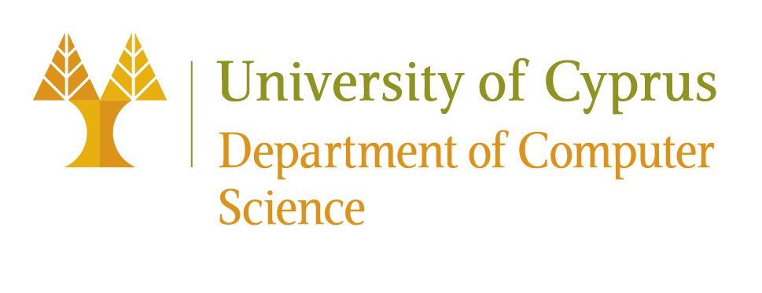

Αγαπητές/οί συνάδελφοι, αγαπητές φοιτήτριες/φοιτητές:
Θα ήθελα να σας ενημερώσω ότι έχω καταθέσει την υποψηφιότητά μου για τη θέση του Αντιπρύτανη Διεθνών Σχέσεων, Οικονομικών και Διοίκησης στις επερχόμενες πρυτανικές εκλογές. Αφετηρία της υποψηφιότητάς μου είναι η πεποίθησή μου ότι το πανεπιστήμιο καλείται να αντιμετωπίσει πρωτοφανείς προκλήσεις αλλά και να αναζητήσει νέες ευκαιρίες ανάπτυξης σε ένα περιβάλλον ραγδαίων αλλαγών. Ο ανταγωνισμός είναι ήδη μεγάλος και το πανεπιστήμιό μας καλείται να ανταποκριθεί με επάρκεια. Με την επιστημονική και διοικητική μου εμπειρία πιστεύω ότι μπορώ να συμβάλω έμπρακτα στη διαμόρφωση των θεσμικών και διοικητικών προϋποθέσεων που θα επιτρέψουν στο πανεπιστήμιο μας να προετοιμασθεί έγκαιρα και ουσιαστικά ώστε να ανταποκριθεί στις επερχόμενες εξελίξεις.
Βασική πηγή των νέων προκλήσεων που θα αντιμετωπίσουμε στο άμεσο μέλλον είναι η ταχύτατη πρόοδος της Τεχνητής Νοημοσύνης (ΤΝ), η οποία λειτουργεί ως καταλυτικός παράγοντας ανατροπών που αγγίζουν τον πυρήνα της αποστολής και της λειτουργίας των πανεπιστημίων, καθώς η ΤΝ απειλεί να μετατραπεί στον βασικό διαμεσολαβητή μεταξύ Ανθρώπου και Γνώσης. Στην Εκπαίδευση, τα εκπαιδευτικά συστήματα δυσκολεύονται να διαχειριστούν τους κινδύνους της και να την εντάξουν στην καθημερινή πρακτική με ασφάλεια, ισότιμη πρόσβαση και σεβασμό στις εκπαιδευτικές αρχές και αξίες. Στην Επιστημονική Έρευνα, η ΤΝ επιταχύνει την ερευνητική διαδικασία, συμβάλλει σε νέες και απρόσμενες επινοήσεις και αλλάζει καθιερωμένες μεθόδους και πρακτικές σε πολλά επιστημονικά πεδία. Στην Κοινωνία και την Οικονομία, η ΤΝ μετασχηματίζει την παραγωγή, τις επενδύσεις και την εργασία, επηρεάζει την ενημέρωση, την επικοινωνία και τις δημοκρατικές διαδικασίες. Οι αλλαγές αυτές προκαλούν κοινωνικά, οικονομικά και πολιτιστικά φαινόμενα, τα οποία απαιτούν νέους τρόπους ανάλυσης, κατανόησης και αντιμετώπισης, με τη συμβολή όλων των επιστημονικών πεδίων.
Σε αυτό το πλαίσιο, το κεντρικό ερώτημα που οφείλουμε να αντιμετωπίσουμε ως Πανεπιστήμιο είναι «τι να κάνουμε;» ώστε να προετοιμάσουμε τους φοιτητές και τις φοιτήτριές μας, που θα εισέλθουν στην επαγγελματική ζωή αύριο και θα βρίσκονται σε θέσεις ηγεσίας και ευθύνης το 2040 ή το 2050, για μια εποχή συνεχών αλλαγών. Η απάντηση δεν είναι ούτε απλή ούτε προφανής. Ακόμη και όσοι βρίσκονται στον πυρήνα των τεχνολογικών εξελίξεων αδυνατούν να προβλέψουν. Υπάρχουν ωστόσο δύο παραδοχές που μπορούμε να υιοθετήσουμε με σχετική βεβαιότητα:Οι παραδοχές αυτές, όσο αυτονόητες και αν φαίνονται, επιβάλλουν άμεσες και ουσιαστικές παρεμβάσεις στις δομές, τις υποδομές και τις διαδικασίες του πανεπιστημίου, ώστε η κοινότητά μας να μπορεί να αφοσιωθεί απερίσπαστη στο δύσκολο έργο της.
Τα τελευταία χρόνια, το πανεπιστήμιό μας ολοκλήρωσε μια απαιτητική φάση στην κτηριακή του ανάπτυξη. Με επίμονες προσπάθειες προώθησε σημαντικές θεσμικές αλλαγές και πρωτοβουλίες όπως το νέο νομοθετικό πλαίσιο για τους τεχνοβλαστούς και τα ξενόγλωσσα προγράμματα σπουδών, τα μικροδιαπιστευτήρια και οι συστάσεις για τη χρήση της Τεχνητής Νοημοσύνης. Αντιμετώπισε όμως και περιόδους αβεβαιότητας αναφορικά με την ευρωστία και τη βιωσιμότητα των οικονομικών του και την κυβερνοασφάλεια υποδομών και πληροφοριών, και μια συνεχιζόμενη δυστοκία στον εκσυγχρονισμό των διοικητικών συστημάτων, της επικοινωνίας και της διαδικτυακής του παρουσίας. Παράλληλα, οι αυξανόμενες και πιο σύνθετες απαιτήσεις της έρευνας, της διδασκαλίας, της διοίκησης και της διεθνοποίησης, ανέδειξαν την ανάγκη ριζικού εκσυγχρονισμού των διοικητικών μας πρακτικών. Χρειαζόμαστε μεγαλύτερη διαφάνεια και λογοδοσία, σαφέστερες στρατηγικές προτεραιότητες, και λιγότερη γραφειοκρατία. Πρέπει να σκεφτούμε νέα συστήματα οργάνωσης, διοίκησης, ενδεχομένως και διακυβέρνησης. Μετά από σχεδόν 40 χρόνια πλούσιας εμπειρίας, μπορούμε να κάνουμε τομές για να περάσουμε σε ένα άλλο επίπεδο λειτουργίας.
Αρκετές από τις προκλήσεις αυτές άπτονται της αποστολής της Αντιπρυτανείας Διεθνών Σχέσεων, Οικονομικών και Διοίκησης, η οποία καλείται να εξασφαλίσει τους πόρους, τις υποδομές και τη θεσμική και διοικητική στήριξη που χρειάζεται η πανεπιστημιακή κοινότητα για να ανταποκριθεί στο σύγχρονο περιβάλλον. Εφόσον εκλεγώ, θα εργαστώ για την επίτευξη της αποστολής αυτής, σε στενή συνεργασία με τις διοικητικές και τεχνικές υπηρεσίες, αξιοποιώντας την τεχνογνωσία του ακαδημαϊκού, του ερευνητικού και του διοικητικού μας προσωπικού. Κοινός στόχος είναι η ενίσχυση του ρόλου του Πανεπιστημίου Κύπρου στον ευρωπαϊκό χώρο ανώτατης εκπαίδευσης και έρευνας, με διαφύλαξη του δημόσιου χαρακτήρα και της κοινωνικής του αποστολής.
Οι παραπάνω διαπιστώσεις και προβληματισμοί διαμορφώνουν τις προτεραιότητες της υποψηφιότητάς μου. Στόχος μου είναι να συμβάλω σε ένα πανεπιστήμιο πιο εξωστρεφές και αποτελεσματικό, που στηρίζει έμπρακτα το ακαδημαϊκό και διοικητικό προσωπικό του, ανταποκρίνεται στις ανάγκες των φοιτητριών και των φοιτητών του και διαθέτει τα μέσα για να προσαρμοστεί στις εξελίξεις.
Δεσμεύομαι να εργαστώ για την εμπέδωση, σε όλα τα επίπεδα λειτουργίας του Πανεπιστημίου, μιας κουλτούρας ευθύνης, διαφάνειας και λογοδοσίας, διαβούλευσης και συμπερίληψης, ποιοτικού διαλόγου, τεκμηριωμένης λήψης αποφάσεων και θεσμικής συνέπειας. Ως μέλος της Πρυτανείας θα εργαστώ για την ενίσχυση της διεπιστημονικότητας, με κοινές ερευνητικές υποδομές και δράσεις που διαπερνούν τα όρια σχολών, τμημάτων, ερευνητικών οντοτήτων και υπηρεσιών. Εκτιμώ ότι η αναβάθμιση των ερευνητικών μας υποδομών και δράσεων θα συμβάλει στην αναβάθμιση της ανταγωνιστικότητας του πανεπιστημίου στον Ευρωπαϊκό Χώρο Έρευνας και της επίδρασης του Πανεπιστημίου μας στην κυπριακή κοινωνία και οικονομία. Παράλληλα, θα προωθήσω στοχευμένες διεθνείς συνεργασίες, που ενισχύουν την εξωστρέφεια του πανεπιστημίου και τη συμβολή του στην ειρηνική συνύπαρξη, την καινοτομία και την ανάπτυξη στην Ανατολική Μεσόγειο και τη Μέση Ανατολή.
Η διοικητική μου εμπειρία στο Πανεπιστήμιο Κύπρου από το 1998 μέχρι σήμερα καλύπτει τη διοίκηση ακαδημαϊκών μονάδων, την πανεπιστημιακή διακυβέρνηση, το στρατηγικό και ψηφιακό μετασχηματισμό, την ανάπτυξη προγραμμάτων σπουδών, την επιχειρηματικότητα και την καινοτομία, καθώς και τη συνεργασία με κρατικούς, κοινωνικούς και ευρωπαϊκούς θεσμούς.
Υπηρέτησα ως Πρόεδρος του Τμήματος Πληροφορικής επί δύο διαδοχικές θητείες, τη δύσκολη περίοδο 2010-2014, υλοποιώντας τις συστάσεις της διεθνούς επιτροπής αξιολόγησης για το Τμήμα, σχεδιάζοντας τη στρατηγική διασύνδεσης και συνεργειών του Τμήματος με την αναπτυσσόμενη τότε βιομηχανία της πληροφορικής και τις νεοφυείς επιχειρήσεις του κλάδου, αναβαθμίζοντας τις διδακτικές και ερευνητικές υποδομές του Τμήματος και προωθώντας συνέργειες με κρατικούς φορείς όπως η Εθνική Φρουρά και διάφορα υπουργεία και υπηρεσίες. Στο Τμήμα Πληροφορικής συμμετείχα επίσης στην επιτροπή σχεδιασμού του νέου προπτυχιακού προγράμματος Πληροφορικής το 1999, στην επιτροπή δημιουργίας του μεταπτυχιακού προγράμματος «Προηγμένες Τεχνολογίες Πληροφορικής» το ίδιο έτος, στην επιτροπή δημιουργίας και διαχείρισης του διατμηματικού μεταπτυχιακού προγράμματος Επιστήμης Δεδομένων (2022-σήμερα) και στην επιτροπή στρατηγικού σχεδιασμού του Τμήματος (2018–2025).
Κατά την περίοδο 1999–2000 είχα την εποπτία σχεδιασμού και υλοποίησης του διαδικτυακού συστήματος υποστήριξης των υπολογιστικών εργαστηρίων του τμήματος (helpdesk), το οποίο λειτουργεί αναβαθμισμένο μέχρι σήμερα. Διετέλεσα ιδρυτικός διευθυντής του Κέντρου Επιχειρηματικότητας (2014-2021), σχεδιάζοντας προγράμματα εκπαίδευσης και δράσεις με διάρκεια, συμβάλλοντας στην προώθηση της καινοτόμου επιχειρηματικότητας στην πανεπιστημιακή κοινότητα. Στα πρώτα έξι χρόνια λειτουργίας του, το Κέντρο οργάνωσε περισσότερες από 110 δράσεις με πάνω από 5.500 συμμετέχοντες, προσελκύοντας κορυφαίους ομιλητές από το διεθνή κέντρα καινοτομίας (ΗΠΑ, Κίνα, Ισραήλ, Ευρώπη) και προωθώντας συνεργασίες με οργανισμούς όπως το κορυφαίο πανεπιστημιακό τεχνολογικό πάρκο της Κίνας (Tsinghua University Science Park). Συνεχίζεται μέχρι σήμερα η ετήσια διοργάνωση του Φόρουμ Καινοτομίας Επιχειρηματικότητας (IEF) με συγχρηματοδότηση της PwC, ο ετήσιος φοιτητικός διαγωνισμός καινοτομίας Student Innovators (SINN), το πρόγραμμα πιστοποιητικού στην επιχειρηματικότητα, η ετήσια έρευνα του Global Entrepreneurship Monitor για την Κύπρο με συγχρηματοδότηση του Υπουργείου Εμπορίου και η αναβίωση του Κυπριακού Διαγωνισμού Επιχειρηματικότητας CyEC και του προγράμματος επιτάχυνσης νεοφυών επιχειρήσεων, επίσης με χρηματοδότηση του Υπουργείου Εμπορίου.
Υπηρέτησα στο Συμβούλιο της Σχολής Θετικών και Εφαρμοσμένων Επιστημών κατά τις περιόδους 2003–2005 και 2010–2014, στη Σύγκλητο ως εκπρόσωπος της Σχολής Θετικών και Εφαρμοσμένων Επιστημών για τις περιόδους 2017–2018 και 2019–2021, και σε πολυάριθμες επιτροπές της Συγκλήτου όπως η Επιτροπή για την Τεχνητή Νοημοσύνη (2023-σήμερα), η Επιτροπή Καινοτομίας της Συγκλήτου, η Επιτροπή Διεθνών Σχέσεων, η Ad Hoc Διαχειριστική Επιτροπή Υπολογιστικής Υψηλών Επιδόσεων, η Ad Hoc Επιτροπή Erasmus, η Ad Hoc Επιτροπή Εξ Αποστάσεως Εκπαίδευσης, η Επιτροπή Υπηρεσιών Πληροφορικής, η Ad Hoc Επιτροπή Πολιτικών Χρήσης Τεχνολογιών Πληροφορικής, η Ad Hoc Επιτροπή για το Εκλογικό Σύστημα του Πανεπιστημίου, η Ad Hoc Επιτροπή Ανασχεδιασμού της Ιστοσελίδας του πανεπιστημίου, η Επιτροπή Μεταπτυχιακών Σπουδών της Συγκλήτου, η Ad Hoc Επιτροπή Ηλεκτρονικής Μάθησης και η Επιτροπή για τον Ραδιοφωνικό Σταθμό του πανεπιστημίου. Σήμερα υπηρετώ ως Πρόεδρος του Συμβουλίου Επιχειρηματικότητας του πανεπιστημίου και εκπρόσωπος του πανεπιστημίου στο Διοικητικό Συμβούλιο του Κέντρου Αριστείας CYENS.
Εκτός του Πανεπιστημίου, υπηρέτησα ως εθνικός εκπρόσωπος της Κυπριακής Δημοκρατίας στη Διαχειριστική Επιτροπή του Προγράμματος Τεχνολογιών της Κοινωνίας της Πληροφορίας του 5ου Προγράμματος-Πλαισίου της Ευρωπαϊκής Ένωσης (2000-2002), μέλος του Διοικητικού Συμβουλίου του Intensive Care Forum (2007–2009), ιδρυτικός Διευθυντής της SafeWeb Hotline για την αντιμετώπιση παράνομου περιεχομένου στο Διαδίκτυο (2005–2008), μέλος του Συμβουλευτικού Συμβουλίου της Κυπριακής Κρατικής Βιβλιοθήκης (2009–2012), μέλος του Επιστημονικού Συμβουλίου για το Κέντρο Διαδραστικής Μάθησης «Λ. Πουρούλλης» στο Παγκύπριο Γυμνάσιο (2010–2012), μέλος στο Συμβουλευτικό Όργανο της Εθνικής Συμβουλευτικής Επιτροπής για την Κοινωνία της Πληροφορίας (2012-2015) και στην ομάδα εργασίας της Βουλής των Αντιπροσώπων για την τριμερή συνάντηση των Προέδρων των Κοινοβουλίων Κύπρου, Ελλάδας και Ισραήλ (Ιούνιος 2017).
Η ακόλουθη αρθρογραφία παρουσιάζει εκτενέστερα απόψεις και παρεμβάσεις μου αναφορικά με την ανώτατη εκπαίδευση.
Η διαδρομή αυτή με έχει διδάξει ότι οι ουσιαστικές αλλαγές απαιτούν τόλμη, μέθοδο και επιμονή, συνεργασία και εμπιστοσύνη, συνέχεια και συνέπεια στην υλοποίηση. Με αυτή την αντίληψη ζητώ τη στήριξή σας.
Το επόμενο διάστημα θα παρουσιάσω αναλυτικότερα προτάσεις και ιδέες, και προσβλέπω στον διάλογο μαζί σας, ώστε να τις εμπλουτίσουμε με τις εμπειρίες, τις ανάγκες και τις εισηγήσεις της πανεπιστημιακής μας κοινότητας.